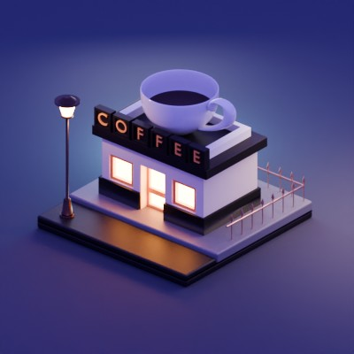

Blender · Materials · Lighting · Rendering
Coffee Shop Scene
Built a stylized scene to practice visual storytelling through materials, lighting, and camera placement.

Starting point
One of my first Blender projects, this scene was inspired by Polygon Runway’s coffee-shop tutorial.
My contribution
Using the tutorial as a foundation, I explored materials, camera placement, and lighting. I iterated on light position, intensity, and color to develop the atmosphere of the finished scene.
Result
Produced a completed render and gained a foundation in Blender scene development. The project complements my engineering work with experience communicating form and design visually.